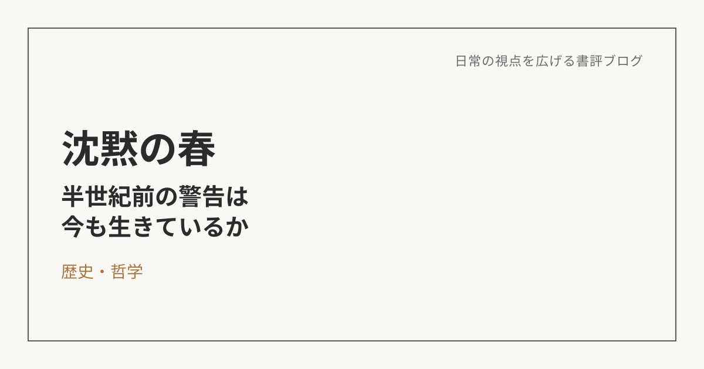
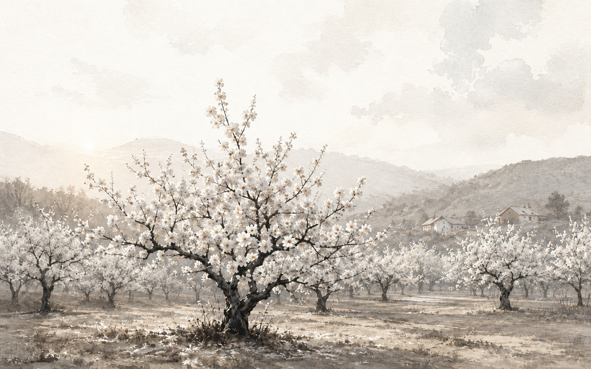

沈黙の春――警告は届いたのか、それとも風化したのか
この本について
レイチェル・カーソンによる本作は、1962年に発表された環境問題の古典。すべての生き物がいなくなった、架空だけれどありえそうな町の描写から始まり、殺虫剤が土壌・河川・地下水を汚染し、虫からそれを食べる捕食者、そして人間へと連鎖的に被害が広がっていく様子を、具体的な事例を積み重ねながら描いていく一冊。

主張はシンプル、でもそこから見えてくるものがある
長い本だけれど、直接的な主張自体はいたってシンプルだ。「化学薬品は危険だ」。それに尽きると言っていい。本のほとんどは、その主張を裏づける具体的なケースの紹介に割かれている。
読みながら一番気になったのは、実はそこではなかった。1962年という発表当時、この本がどれだけ影響力を持っていたかは想像がつく。でも60年以上経った今、殺虫剤という存在そのものが世の中からなくなったわけではない。当時の警告は、その後の現実にどう反映されたのか――科学的にも危険性が裏づけられて厳しく規制されたのか、それとも影響は部分的だと判断されて、実態はあまり変わらないまま使われ続けているのか。読んでいる間、ずっとこの問いが引っかかっていた。
DDTのその後――警告は「思い込み」ではなかった
そこで、この本の主張がその後の現実にどう反映されたのかを調べてみた。結論から言うと、この本は単なる古典として消費されただけの本ではなく、実際にその後の環境政策や農薬規制に大きな影響を与えたと評価されている。
象徴的なのがDDTだ。カーソンが強く問題視したこの化学物質は、米国では1972年に使用禁止となった。この本の主張は「読まれて終わり」ではなく、少なくとも代表的な農薬については、実際の規制強化につながったということになる。カーソンが警告していた「環境中に残留し、食物連鎖を通じて生物や人間に蓄積する」「鳥類などに深刻な影響を及ぼす」という点も、現在ではかなり広く認められている。つまりこの警告は、思い込みではなく、かなり本質的な問題提起だったと見るのが妥当だと思う。
それでも、殺虫剤が世界から消えたわけではない
ただし、この本によって殺虫剤そのものが世界から消えたわけでもない。現代の評価はもう少し複雑だ。DDTのように強く規制された物質がある一方、農薬や殺虫剤というカテゴリー自体は今も使われ続けている。公衆衛生上の必要性が高い場面（マラリア対策など）では、今なお使用の是非が議論の対象になっている。
つまり現代的な理解としては、「カーソンの警告は正しかったので、無差別に大量散布する時代は終わった」一方で、「化学的手段を完全には手放せないため、便益と害を慎重に比較しながら使う方向に移った」というのが実情に近いのだと思う。この本の最大の意義は、一つの物質を告発したことそのものよりも、人間が自然に手を加えるとき、その影響を局所的・短期的にではなく、生態系全体の中で見なければならないという視点を、広く根づかせたことにあるのではないか。
人間中心のエゴが、人間自身を破壊する
自分の読後感として残ったのは、「殺虫剤は危険だ」という直接的なメッセージだけではなく、人間が自然をコントロールできると思い込みすぎることへの警告としての側面だった。
宇宙から地球を俯瞰してみれば、人間も自然の一部でしかない。むしろ、地球に、自然に生かされている存在のはずだ。それにもかかわらず、人間の快適さを優先するあまり、自然への感謝を忘れ、人間中心で自然や生物を破壊してしまっている。これは殺虫剤に限った話ではなく、建築や、もしかしたら病気の捉え方だってそうかもしれない。自分も世界の一部だという東洋哲学的な感覚で見たときに、世界を破壊することは、回り回って自分自身を破壊することでもあるのではないか。
身の丈にあった言動、という着地点
とはいえ、そこから「だからこう生きるべきだ」と大きな理想を語るだけでは意味がない。自分自身、科学技術や人工物に囲まれ、その恩恵を受けながら暮らしている。安直に「環境破壊をするな」と言える立場でもない。
だから、この本からの学びを今の自分に引きつけるなら、文明を全面否定することではなく、便利さの裏にある影響を少しでも自覚し、自分がコントロールできる範囲で、必要以上に自然や環境を傷つけないように意識していくこと――そのくらいの、身の丈にあったスタンスが現実的なのだと思う。理想論に飛びつかず、かといって無自覚でもいたくない。この本が半世紀を経てもなお読む価値があるのは、その両方のあいだで考え続けること自体を、静かに促してくるからだと思う。
※本記事はNotionに書き溜めた読書メモをもとに、AIの編集サポートを受けて構成しています。